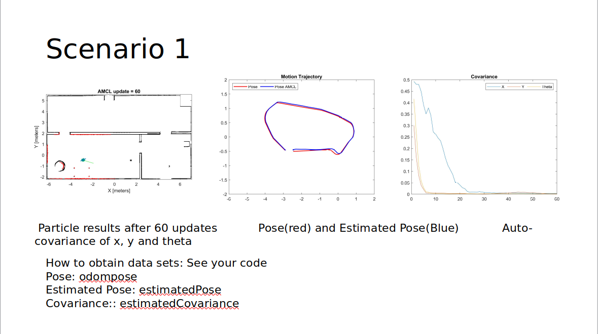
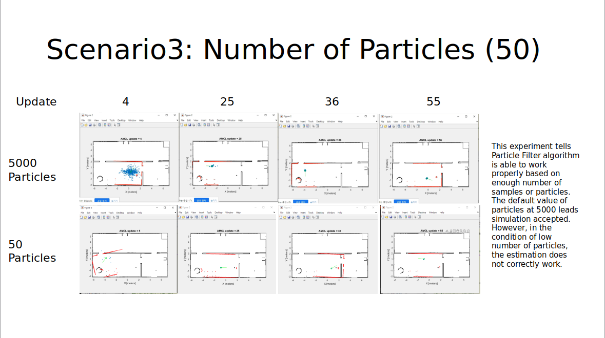
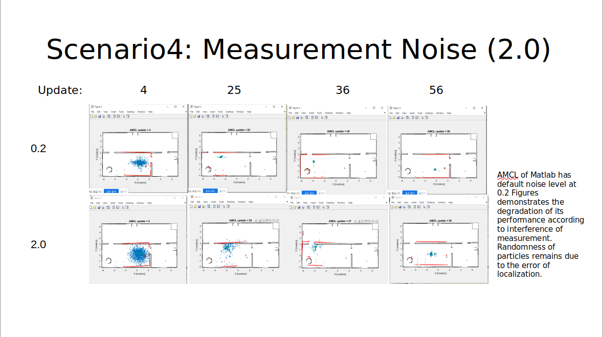
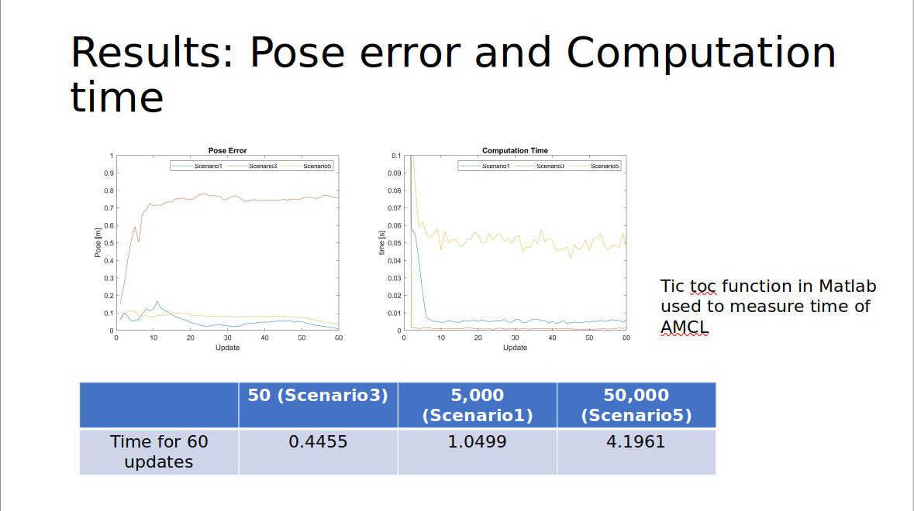

Development, validation, and instruction of a mobile-robot localization laboratory examining particle-filter behavior, sensor uncertainty, particle count, pose estimation, and computational trade-offs.
Lab 2 extended the localization component of the previous robotics laboratory into a dedicated experiment using Adaptive Monte Carlo Localization with a simulated TurtleBot.
Students first established a working AMCL implementation using a known map, odometry, and range measurements. The baseline system was then deliberately modified to examine how individual model parameters affected localization performance.
The laboratory was designed to move beyond simply obtaining a successful pose estimate. Students were required to interpret particle distributions, estimated trajectories, covariance, localization error, and computation time using particle-filter theory.
The laboratory followed the fundamental particle-filter cycle used by Monte Carlo Localization.
The Gazebo TurtleBot environment supplied robot motion, odometry, and laser-scan measurements through ROS. MATLAB received those measurements and executed the AMCL localization procedure.
Coordinate transformations were used to express sensor measurements relative to the robot base, while motion and likelihood-field models represented uncertainty in the robot motion and range observations.
The baseline experiment established the reference localization performance used for comparison with the modified parameter scenarios.

The dynamic experiment shows the localization process as particles evolve and the estimated pose is updated while the simulated TurtleBot moves through the environment.
Each experiment modified a single parameter relative to the baseline so that its influence on localization could be isolated and interpreted.
Default AMCL configuration used as the reference localization condition.
Expected measurement weight was reduced to 0.2 to investigate localization behavior when sensor observations are assigned less confidence.
The particle limit was reduced to only 50 particles to investigate insufficient sampling of the robot's belief distribution.
Measurement noise was increased to 2.0 to examine localization behavior under degraded sensing.
Reducing the number of particles limits how well the probability distribution over possible robot poses can be represented.

Increasing measurement uncertainty makes sensor observations less informative when evaluating candidate robot poses.

Additional testing extended the particle-count study beyond the required laboratory scenarios by comparing 50, 5,000, and 50,000 particles.
| Particle Count | Time for 60 Updates | Interpretation |
|---|---|---|
| 50 | 0.4455 s | Lowest computation time, but insufficient particle representation produced poor localization accuracy. |
| 5,000 | 1.0499 s | Baseline configuration providing a practical balance between localization performance and computation. |
| 50,000 | 4.1961 s | Dense particle representation with substantially increased computation time. |

The experiments demonstrated that localization performance depends on the interaction between motion uncertainty, sensor-model quality, particle representation, and computational resources.
More particles can improve the representation of the probability distribution, but increasing particle count also increases computation. Conversely, too few particles may execute quickly while failing to represent the belief distribution adequately.
The laboratory report required students to connect experimental observations to particle-filter theory rather than simply demonstrate that the software executed.
Students documented the localization methodology, presented their simulation results, explained the causes of degraded performance, and discussed limitations that could negatively affect AMCL.
I developed and revised the laboratory material, validated the AMCL workflow in the virtual TurtleBot environment, prepared instructional and experimental analysis material, supported students during implementation and troubleshooting, and participated in assessment and grading.
The laboratory was structured to connect theoretical probabilistic localization with observable robot behavior, quantitative results, and engineering interpretation.
Lab 3 moved from localization into sampling-based path planning using RRT and RRT*, followed by path execution using Pure Pursuit.
Sampling-based path planning, robot motion constraints, obstacle inflation, planning-quality comparison, and trajectory tracking.